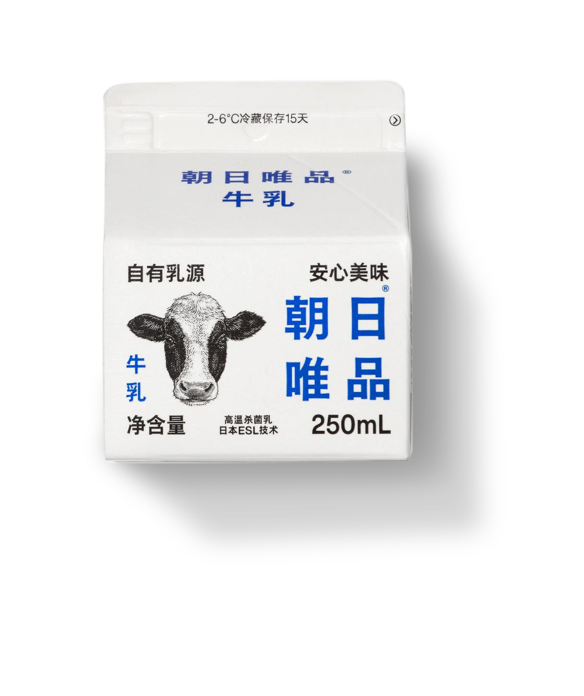

During the brand design process, it's important to identify the unique values that the brand represents. However, Zhao Ri Wei Pin was an exception as their values were so clear and differentiated from their competitors that the design needed to focus on highlighting those values. Zhao Ri Wei Pin is a company that embodies the "SLOW" approach to animal husbandry. They spent several years improving the soil fertility before raising good cows and producing quality milk, and they use circular farming to produce high-quality fruits and vegetables. This dedication to quality, integrity, and nature is rare and valuable in the fast-paced times we live in. To emphasize this spirit, the brand design uses a bold visual language that is uncommon in the dairy industry. The logo uses an oversized font with fine typography and classical illustrations to create a brand image that is resistant, restrained, and unpretentious. The font size was a crucial aspect of the design as it symbolizes the brand's determination and pride. By making the brand name as big as possible, the design aims to bring this energy to every consumer.